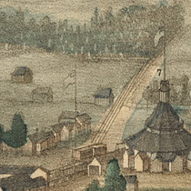
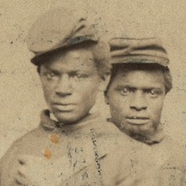
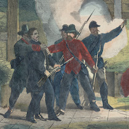

For Us the Living is a series of five interactive modules that encourage high school students to explore American history through the stories found in Alexandria National Cemetery.
Preview Modules
Students learn historical and critical thinking skills as well as historical content. Each module uses primary and secondary sources, including photographs, maps, legislation, diaries, letters, and video interviews with scholars.

In the Service of the Country
Students will discover the historical and geographical context that caused the City of Alexandria, Virginia to become home to one of the first national cemeteries.
NCSS Themes:
People, Places, and Environments; Civic Ideals and Practices

Fighting Side by Side
Students will learn the story of one of the United States’ first civil rights actions, an 1864 United States Colored Troops’ petition to be buried in Alexandria National Cemetery.
NCSS Themes:
Culture; Power, Authority, and Governance; Civic Ideals and Practices

A Sad and Terrible Disaster
Students will uncover the fate of four men linked to the manhunt for John Wilkes Booth, President Lincoln’s assassin.
NCSS Themes:
Civic Ideals and Practices
In the Spirit of Fraternity
Students will explore the history behind the removal of Confederate war dead from Alexandria National Cemetery.
NCSS Themes:
Culture; Civic Ideals and Practices
Before Rosie the Riveter
Students will compare and contrast the memorialization of women and recognition of their military service from the Civil War to the present day.
NCSS Themes:
Culture; Power, Authority, and Governance; Civic Ideals and Practices
Like What You See? Get Started!
In the Classroom
- Modules can be completed in 20-45 minutes depending on the student.
- Modules can be completed in any order but “In Service of the Country” serves as a good introduction.
- Each module ends with an optional digital activity and service-learning project related to the module theme.
Connections to Standards
All modules help students develop the following NCSS C3 History Framework skills.
D2.His.1.9-12: Evaluate how historical events and developments were shaped by unique circumstances of time and place as well as broader historical contexts.
D2.His.2.9-12: Analyze change and continuity in historical eras.
D2.His.3.9-12: Use questions generated about individuals and groups to assess how the significance of their actions changes over time and is shaped by the historical context.
D2.His.4.9-12: Analyze complex and interacting factors that influenced the perspectives of people during different historical eras.
D2.His.5.9-12: Analyze how historical contexts shaped and continue to shape people’s perspectives.
D2.His.6.9-12: Analyze the ways in which the perspectives of those writing history shaped the history that they produced.
D2.His.11.9-12: Critique the usefulness of historical sources for a specific historical inquiry based on their maker, date, place of origin, intended audience, and purpose.
D2.His.12.9-12: Use questions generated about multiple historical sources to pursue further inquiry and investigate additional sources.
D2.His.14.9-12: Analyze multiple and complex causes and effects of events in the past.
D2.His.15.9-12: Distinguish between long-term causes and triggering events in developing a historical argument.
D2.His.16.9-12: Integrate evidence from multiple relevant historical sources and interpretations into a reasoned argument about the past.